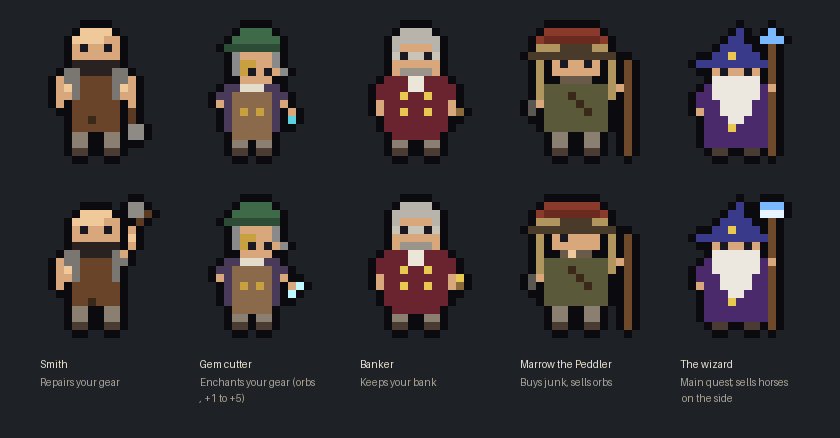
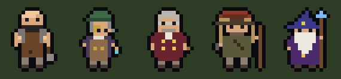

Town 1 townsfolk, draft 1
Five people for the round square. They're drawn pixel by pixel at the players' size (15 × 18) and face front like the players do. Each has a two-frame idle.

Idle loop

Standing in the town
At game size, mocked onto the real town picture. The smith stands at his forge, the banker at the bank door, the gem cutter at the table, Marrow by his wagon, and the wizard beside his orb.

Who's who
Repairs your gear. Bald, a black beard, a leather apron over a grey shirt, bare forearms. His hammer hangs at his side, then he lifts it.
Enchants your gear (orbs, +1 to +5). A green cap, a brass loupe over one eye, a waistcoat over a work apron. The gem in her hand glints.
Keeps your bank. Grey hair, spectacles, a moustache, a long burgundy coat with gold buttons and a white cravat. Flips a coin from his purse.
Buys your junk, sells orbs. A big canvas pack with a red bedroll on top, a wide hat, stubble, a pot hanging off his pack, a walking stick. Winks.
Main quest (talks to you through his orb), and sells horses on the side. A long white beard, a violet robe with gold stars, a tall blue hat, a staff whose orb pulses.
- Does each one read at a glance: who they are and what they do?
- Any colours or details to change? The gem cutter's loupe and Marrow's pack are the two I'm least sure about.
- Placeholder names for now. Want any of them named?
After your notes they go into the game at their spots. Tapping one opens their service: repairs, enchanting, bank, buy and sell, quest. The campfire keeps resting and fork swaps.